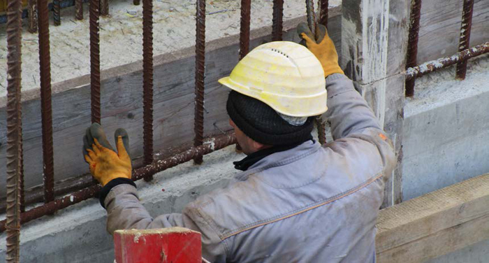

Kopfschutz ist nach § 15 Arbeitsschutzgesetz bestimmungsgemäß zu benutzen. Die bestimmungsgemäße Benutzung muss den Benutzern und Benutzerinnen bekannt sein.
In allen Normen der in dieser Regel aufgeführten Kopfschutzarten wird gefordert, dass die Hersteller darauf hinweisen müssen, dass der Kopfschutz nur schützen kann, wenn er richtig passt. Dies hängt einerseits von der richtigen Größe und andererseits von der richtigen Einstellung der Innenausstattung auf die Größe und Form des Kopfs ab. Dabei ist die Tragehöhe (sofern einstellbar) und der Kopfumfang über die jeweilige Einstelleinrichtung, nach den Angaben der Hersteller, einzustellen. Der Kopfschutz verfügt über einen ausreichend festen Sitz, wenn er ohne Kinnriemen bei leichtem Kopfschütteln seine Position nicht verändert. Für verschiedene Tätigkeiten, bei denen beispielsweise kopfüber gearbeitet werden muss, kann der sichere Sitz des Kopfschutzes auf dem Kopf durch die Verwendung des Kinnriemens gewährleistet werden.
Die bestimmungsgemäße Benutzung schließt jegliche konstruktionsbedingte Änderung des Kopfschutzes (Anbohren bzw. Ankleben etc.) aus. Es darf grundsätzlich nur Zubehör angebracht oder ausgetauscht werden, das vom Hersteller dafür vorgesehen oder zugelassen ist.
Die grundsätzliche Benutzung des Kinnriemens ist sehr zu empfehlen – auch für Tätigkeiten, für die nach der Gefährdungsbeurteilung kein Kinnriemen erforderlich ist. Der Kinnriemen kann den Verlust des Helms bei Einwirkungen aus allen Richtungen verhindern. Er sollte so eingestellt werden, dass er straff unter dem Kinn anliegt. Bei Drei- und Vier-Punkt-Kinnriemen ist darüber hinaus darauf zu achten, dass sich die Bänder des Kinnriemens knapp unterhalb der Ohren teilen und jeweils vor und hinter dem Ohr verlaufen. Sie dürfen nicht, auch nicht teilweise, über das Ohr verlaufen. Alle Bänder sollten straff sitzen, jedoch nirgendwo einschneiden.
Es gibt Kleidungsstücke bzw. Accessoires, die in Verbindung mit einem Helm getragen werden können, wie wärmende Winterhauben oder -mützen oder kühlende Helmeinsätze, Schweißbänder oder Bandanas für den Sommer. Dabei ist darauf zu achten, dass der feste Sitz des Helms und somit dessen Schutzfunktion nicht beeinträchtigt werden darf. Bei der Auswahl entsprechender Produkte sind die Informationen der Hersteller zu beachten. Einige Hersteller geben diesbezüglich in ihren Anleitungen an, dass unter dem Helm nichts getragen werden sollte.

Abb. 22 Durch den Einsatz einer zu dicken Mütze kann der sichere Sitz des Kopfschutzes nicht mehr gewährleistet werden
Auf den Kopfschutz dürfen nur Farbanstriche, Lackierungen, Löse- bzw. Klebemittel oder selbstklebende Etiketten aufgebracht werden, die von dem Hersteller angeboten werden oder zugelassen sind. Mittlerweile gibt es Hersteller auf dem Markt, die Aufdrucke, Lackierungen und weitere individuelle Sonderwünsche, wie reflektierende Streifen auf Helmen und Stickereien auf Anstoßkappen, als individualisierten Kopfschutz anbieten. Dies hilft, die unsachgemäße Anbringung von Beschichtungen und Aufklebern durch den Benutzer bzw. die Benutzerin zu verhindern bzw. zu minimieren.
Eine weitere Maßnahme zur Verhinderung von unzulässig angebrachten Aufklebern stellt die Verwendung transparenter Aufkleber dar, die von einigen Herstellern für ihre Produkte angeboten werden. Sie zeichnen sich durch unbedenkliche Kleber aus, die keinerlei schädigende Wirkung auf die Helmschale haben. Die Fläche dieser transparenten Aufkleber können als Basis für andere Aufkleber dienen. Mit dieser Möglichkeit umgeht man die Problematik, dass Aufkleber mit unbekannten Klebern und gegebenenfalls schädigenden Folgen direkt auf der Helmschale angebracht werden. Weitere Individualisierungen werden durch an der Stirn angebrachte Karten- bzw. Ausweishalter ermöglicht.
Weist der Kopfschutz massive Beschädigungen (tiefe Kratzer, Risse, Verformungen, Durchdringungen, Bruchstellen, Ablösung von Teilen der Innenausstattung oder des Kinnriemens, Ablösung der Schaumstoffschale von der Helmschale, Verfärbungen der Helmschale, etc.) auf, muss der Kopfschutz ausgetauscht oder gegebenenfalls repariert werden. Fehlende oder defekte Teile sind zu ersetzen.
Jeder Kopfschutz, der einem starken Aufprall ausgesetzt war, sollte auch ohne erkennbare Beschädigung ausgetauscht werden.
Die Lebensdauer beschreibt die Zeitspanne vom Herstellungsdatum bis zu dem Zeitpunkt, an dem die Schutzfunktion aufgrund der Alterung nicht mehr gewährleistet werden kann.
Die Gebrauchsdauer beschreibt den maximal möglichen Zeitraum der Benutzung. Sie kann von der Lebensdauer abweichen und kürzer ausfallen.
Sowohl die Lebensdauer als auch die Gebrauchsdauer variieren je nach Hersteller und Helmtyp bzw. Helmmodell.
Informationen über die Lebens- oder Gebrauchsdauer von Kopfschutz sowie deren Bestandteile sind der Anleitung des Herstellers zu entnehmen und zu beachten.
Die Alterung von Helmschalen aus thermoplastischen Kunststoffen führt zu einer Minderung der Schutzfunktionen und hängt von verschiedenen Einflussfaktoren ab.
Eine Versprödung des Kunststoffes wird hauptsächlich durch UV-Strahlung, durch starke Wärmezufuhr und durch Witterungseinflüsse (Hitze, Kälte, Regen etc.) hervorgerufen und führt so zu einer schnelleren Alterung. Je nach den vorherrschenden Einsatzbedingungen tragen weitere Einflüsse, wie mechanische und chemische Einwirkungen, zur Alterung bei. Die Alterung hängt zudem von der Art und Qualität der verwendeten Kunststoffe, der zugegebenen UV-Stabilisatoren und weiteren Parametern des Herstellungsprozesses ab. Aus diesen Gründen ist für Schutzhelme aus thermoplastischen Kunststoffen eine Gebrauchsdauer von vier Jahren zu empfehlen, sofern übliche Einsatzbedingungen und keine erhöhten Beanspruchungen vorliegen und keine anderen Angaben durch die Hersteller gemacht werden.
Häufig verwendete thermoplastische Kunststoffe sind:
Tabelle 2 Thermoplastische Kunststoffe und deren Kurzzeichen
| Bezeichnung | Kurzzeichen |
| Polyethylen | PE |
| Polypropylen | PP |
| Glasfaserverstärktes Polypropylen | PP-GF |
| Polycarbonat | PC |
| glasfaserverstärktes Polycarbonat | PC-GF |
| Polyamid | PA |
| glasfaserverstärktes Polyamid | PA-GF |
| Acrylnitril-Butadien-Styrol | ABS |
Helmschalen aus duroplastischen Kunststoffen unterliegen kaum den schädigenden Einflüssen durch UV-Strahlung und sind unempfindlicher gegenüber hohen Umgebungstemperaturen und chemischen Einwirkungen. Sie weisen eine geringere Neigung gegenüber Versprödung auf, wodurch die Alterungsprozesse wesentlich langsamer ablaufen. Unter normalen Einsatzbedingungen wird eine Gebrauchsdauer von acht Jahren empfohlen, sofern keine anderen Angaben durch den Hersteller gemacht werden.
Häufig verwendete duroplastische Kunststoffe sind:
Tabelle 3 Duroplastische Kunststoffe und deren Kurzzeichen
| Bezeichnung | Kurzzeichen |
| Faserverstärktes Phenol-Formaldehyd-Harz | PF-SF |
| Glasfaserverstärktes ungesättigtes Polyesterharz | UP-GF |
| Naturfaser-Poly-Anilin-Acetat | PAA-NF |